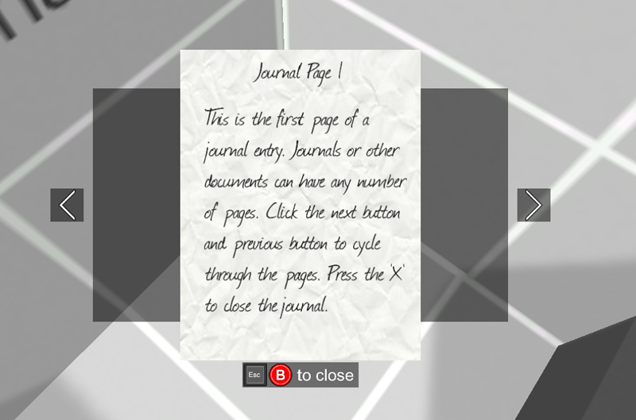

First Person Exploration Kit: Creating a Journal
Journals are interactable objects in the game world that display a set of pages for the player to read. For example, a book could trigger a journal that would show some of the books pages on screen for the player to flip through.

Journal
- Drag any 3D object into the scene (e.g. model of an old book).
- Ensure the Collider is either correctly scaled and rotated (e.g. if using imported Mesh Collider), or remove it completely.
- If Collider was removed in step 2, add a new collider (e.g. Box Collider).
- Size the Collider (either imported, or added in step 3 above - e.g. Box Collider) to fit for the object you're making, with consideration to reticle aiming (e.g. if tiny scrap of paper, make collider big enough to get reticle over easily for the player).
- Add FPEInteractableJournalScript to your object, and set the following variables to suit your object:
- Interaction String: For example "Open the old book"
- Post-read Interaction String: For example "It's that old book of spells I already read"
- Journal Pages: Set size to at least 1, and assign corresponding Sprites. See Graphics Guide for making your own Journal Pages.
- Run the scene, and interact with the Journal to read it.
To make journals readable again later from the inventory screen, you can attach a note.